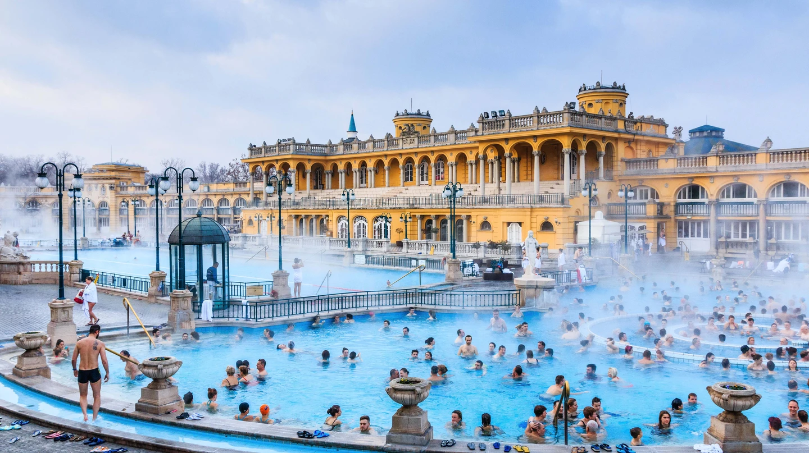

| Budapest | Location | Sightseeing | Artifacts | Coulture |
|---|

Crowning the capital atop Castle Hill, Buda Castle presents an architectural melting pot,
with Renaissance ruins around the foundations, a grand Habsburg-era neoclassical façade, and a stark communist-style interior.
The palace is divided into three museums: The Hungarian National Gallery, the Budapest History Museum and the National Széchényi Library.
You could easily spend the whole day just mooching around these three.
But make sure to bring a camera the views over the river and cobbled courtyards are quite something.
Take a plunge in Budapest's most famous thermal bath.
The Széchenyi Baths are a visual feast with their canary-hued colonnades and steaming outdoor thermal pools.

Make sure you go inside to explore the vast interior clad with ceramics, marble and mosaics.
Budapest is known as the 'City of Spas' for its 120 geothermal springs so don't miss out.
Another Danube-side icon, the Hungarian Parliament dominates the Pest side of the river with its neo-gothic spires,
gargoyles and a dome that peaks at 97 metres. Tour the building, see it from a boat or simply look over from Buda.
If you take a guided tour, climb the golden staircase, and ogle the crown jewels that once belonged to Hungary's first king (plus the rooms where the Hungarian government now meet).